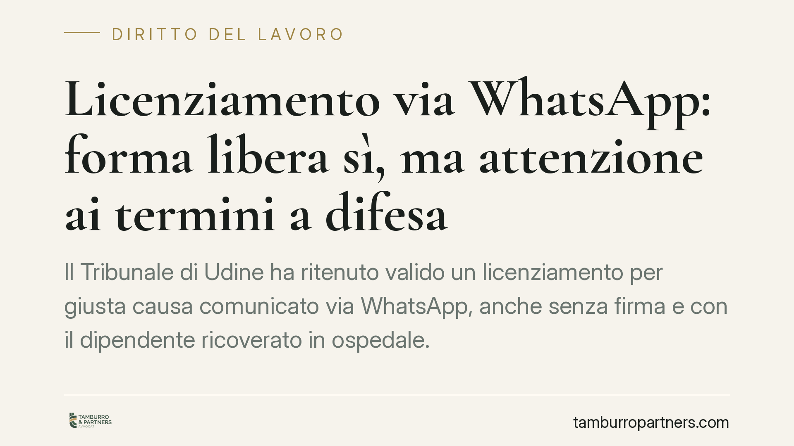

Licenziamento via WhatsApp: forma libera sì, ma attenzione ai termini a difesa
Il Tribunale di Udine ha ritenuto valido un licenziamento per giusta causa comunicato via WhatsApp, anche senza firma e con il dipendente ricoverato in ospedale. Ha però condannato il datore a un'indennità per un errore procedurale: i termini a difesa erano stati calcolati dalla spedizione e non dalla ricezione della contestazione. Un caso che chiarisce confini e rischi della forma scritta digitale.

Il caso
Un lavoratore riceve il licenziamento per giusta causa tramite un messaggio WhatsApp. Il messaggio è privo di firma e arriva mentre il dipendente è ricoverato in ospedale. Il lavoratore impugna l'atto, contestando sia la forma sia il rispetto delle garanzie procedurali.
Il Tribunale di Udine ha accolto solo in parte la domanda. Ha confermato la validità sostanziale del licenziamento, ma ha riconosciuto un'indennità al lavoratore per un vizio nel procedimento disciplinare.
Inquadramento normativo
La legge richiede la forma scritta per il licenziamento (art. 2, Legge 604/1966), ma non impone una forma solenne. La giurisprudenza ammette da tempo che la "forma scritta" si possa realizzare anche con strumenti digitali, purché l'atto sia riconducibile al datore e giunga a conoscenza del destinatario. Il messaggio WhatsApp, se proveniente in modo certo dall'azienda e ricevuto dal lavoratore, soddisfa questo requisito. L'assenza di firma autografa non è di per sé causa di nullità: conta la riconducibilità al mittente e l'avvenuta ricezione.
Il nodo critico riguarda invece il procedimento disciplinare disciplinato dall'art. 7 della Legge 300/1970 (Statuto dei lavoratori). Prima del licenziamento per giusta causa il datore deve contestare l'addebito e concedere al lavoratore un termine per difendersi. Questo termine, secondo il Tribunale, decorre dal momento in cui la contestazione giunge a conoscenza del lavoratore, non dalla data in cui il datore la spedisce. Calcolarlo dalla spedizione comprime di fatto il tempo utile a difendersi e integra una violazione procedurale.
Le conseguenze sanzionatorie seguono la disciplina del D.Lgs. 23/2015 (contratto a tutele crescenti): l'art. 4 prevede, per i vizi formali e procedurali, un'indennità economica a carico del datore, senza reintegra, salvo il caso di licenziamenti sostanzialmente ingiustificati. Nella vicenda incide anche il rapporto di distacco (art. 30, D.Lgs. 276/2003), che distingue il datore distaccante dall'azienda distaccataria presso cui il lavoratore presta attività.
Implicazioni pratiche
Per il datore di lavoro la lezione è duplice. Da un lato, il canale digitale è legittimo: un licenziamento via WhatsApp non è nullo solo perché manca la firma o perché il dipendente è assente o ricoverato. Dall'altro, la facilità del mezzo non riduce gli obblighi procedurali. L'errore sul calcolo dei termini a difesa, apparentemente tecnico, basta a far scattare una condanna economica.
Il ricovero in ospedale del lavoratore, in particolare, impone attenzione al momento effettivo di ricezione. Se la comunicazione resta inaccessibile per un periodo, i termini vanno ancorati alla conoscenza reale e non alla spedizione.
Per il lavoratore, la pronuncia conferma che impugnare un licenziamento solo sulla forma raramente paga. Più efficace è individuare vizi procedurali concreti — come il mancato rispetto dei termini a difesa — che aprono a tutele indennitarie.
Nei contesti di distacco, infine, occorre verificare quale soggetto titoli il potere disciplinare e chi debba intimare l'atto: un errore sul soggetto legittimato può viziare l'intero procedimento.
Cosa fare in concreto
- Datori di lavoro: calcolate sempre i termini a difesa dalla ricezione della contestazione, non dalla spedizione. Conservate la prova del momento di consegna.
- In caso di assenza o ricovero del dipendente: accertate l'effettiva conoscenza dell'atto prima di far decorrere i termini e, nel dubbio, affiancate al canale digitale una raccomandata o una PEC.
- Verificate la riconducibilità del messaggio: l'utenza e l'intestazione devono rendere certa la provenienza aziendale.
- Nei rapporti di distacco: individuate con precisione il soggetto titolare del potere disciplinare prima di avviare la procedura.
- Lavoratori: se ricevete un licenziamento digitale, non fermatevi alla forma; fate valutare tempi, contestazione e rispetto dell'art. 7 dello Statuto.
Consigliamo in ogni caso di far esaminare la singola fattispecie prima di agire: differenze minime nei fatti producono esiti giuridici diversi.
Disclaimer
Contributo informativo a cura di Tamburro & Partners - Avv. Giuseppe Tamburro. Non costituisce parere legale.
Ogni storia di lavoro ha i suoi tempi.
Se gestisci HR e vuoi un confronto su contenzioso, ispezioni o licenziamenti, scrivi allo studio. Ti rispondiamo entro un giorno lavorativo.